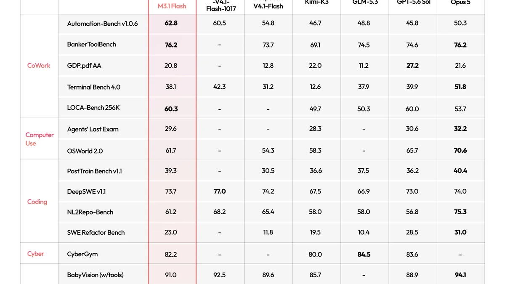
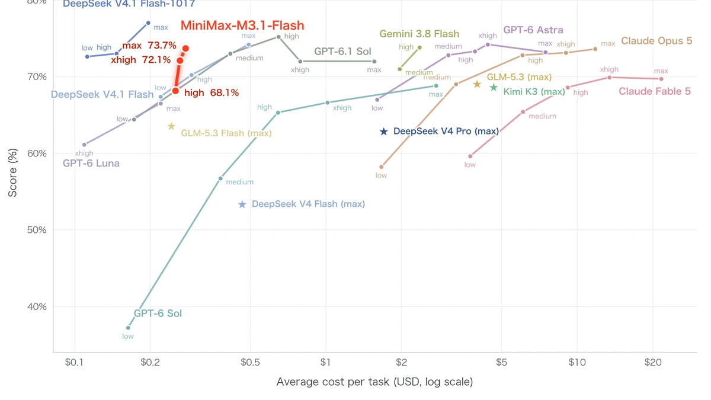

MiniMax M3.1 Flash: the anonymous 'Space Bunny' unmasked as a 3x-faster, 70%-cheaper agent model
- MiniMax officially launched M3.1 Flash on October 19, 2026.
- “Space Bunny,” the anonymous model that processed 200 trillion+ tokens in stealth, was an early M3.1 Flash build.
- Online inference is nearly 3x faster: 200+ tokens/sec peak output, 170+ tokens/sec median (P50).
- Flat API pricing: $0.15/1M input, $0.60/1M output, $0.015/1M cached input tokens; agentic-task costs 70% below M3.
- Company-reported benchmarks: Automation-Bench 62.8 (top of its comparison table), BankerToolBench 76.2, DeepSWE v1.1 73.7%, OSWorld V2 61.7, CyberGym 82% — no independent verification yet.
- Live now on the MiniMax API, M Plan, and MiniMax Code; model weights and a larger Pro version arrive later.
The bunny comes out of the hat
For weeks, developers have been buzzing about "Space Bunny," an anonymous model quietly climbing leaderboards after processing more than 200 trillion tokens in stealth. Today MiniMax confirmed the open secret: Space Bunny was an early version of M3.1 Flash, in a launch post headlined MiniMax M3.1 Flash: Redefining Agent Performance and Cost, published October 19, 2026.
Reuters, reporting the launch on Monday, says the company describes the update as delivering "generational" improvements in agentic tasks, programming, and cybersecurity — with online inference speed nearly tripled and usage costs cut by 70%. It is one of the most consequential Chinese model launches of the year, arriving just two days after DeepSeek's V4.1-Flash-1017 update.
Faster, and dramatically cheaper
The pitch is blunt: near-frontier agent performance at flash-tier cost. MiniMax says M3.1 Flash hits 200+ tokens per second in everyday output, with a median (P50) above 170 TPS — roughly three times the speed of its predecessor. For agentic workloads, the company claims overall usage cost is 70% lower than M3.
Pricing is a flat, simple menu: $0.15 per million input tokens, $0.60 per million output tokens, and $0.015 per million cached-input tokens — no tiers, no peak-hour multipliers. At that price, the model undercuts most flagship competitors by an order of magnitude on paper, which is exactly where MiniMax wants the fight to happen.

The benchmarks — all MiniMax's own
The numbers are impressive, and they are all company-reported. On Automation-Bench v1.0.6 — real enterprise workflows across SaaS systems — M3.1 Flash scores 62.8, topping the comparison table MiniMax published against DeepSeek, Kimi-K3, GLM-5.3, GPT-6.1 Sol, and Opus 5. It posts 76.2 on BankerToolBench, 61.7 on OSWorld V2 (computer use), 29.6 on Agents' Last Exam, and 82% on CyberGym, which measures vulnerability discovery and validation. The company says it ranks first among Chinese models on both OSWorld V2 and Agents' Last Exam.
The honest caveat sits in MiniMax's own table: on DeepSWE v1.1, a hard software-engineering benchmark, M3.1 Flash scores 73.7% while DeepSeek's V4.1-Flash-1017 — released two days earlier — hits 77.0. As MarkTechPost's analysis puts it: near-frontier on agentic office work, mid-pack on hard coding. None of these figures have independent verification yet; treat the charts as the vendor's case, not settled fact.

Where to get it
M3.1 Flash is live now on the MiniMax API, the M Plan subscription, and the MiniMax Code desktop coding app, with a 1-million-token context window. Model weights will be released later, so self-hosting is not an option yet. MiniMax also says a larger Pro version — the intelligence-pushing sibling to this efficiency play — will arrive at an unannounced date.
The subtext of the launch is the real story: the frontier of agentic AI is being repriced in real time. Two Chinese labs dropped flagship-tier "flash" models within 48 hours, each claiming flagship-adjacent performance at a fraction of the cost. If the independent benchmarks land anywhere near MiniMax's claims, the agent-economics conversation for 2026 just got a lot more interesting.
Frequently asked questions
What was “Space Bunny”?
An anonymous model that processed more than 200 trillion tokens while running under a pseudonym on developer leaderboards. MiniMax confirmed on October 19, 2026 that it was an early build of M3.1 Flash.
How much does M3.1 Flash cost to use?
API pricing is flat: $0.15 per million input tokens, $0.60 per million output tokens, and $0.015 per million cached-input tokens. MiniMax says overall usage cost for agentic tasks is 70% lower than its predecessor, M3.
Where can developers use M3.1 Flash right now?
It is live on the MiniMax API, the M Plan subscription, and the MiniMax Code desktop app, with a 1-million-token context window. Model weights and a larger Pro version will be released later.